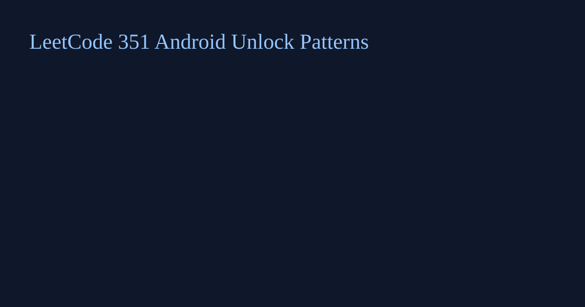

LeetCode 351: Android Unlock Patterns (Backtracking)
LeetCode 351Source: https://leetcode.com/problems/android-unlock-patterns/

English
Use DFS with a skip[a][b] matrix. If moving from a to b needs a middle point, then the move is valid only when that middle point was already visited.
class Solution {
private int[][] skip = new int[10][10];
private boolean[] vis = new boolean[10];
public int numberOfPatterns(int m, int n) {
skip[1][3] = skip[3][1] = 2;
skip[1][7] = skip[7][1] = 4;
skip[3][9] = skip[9][3] = 6;
skip[7][9] = skip[9][7] = 8;
skip[1][9] = skip[9][1] = skip[2][8] = skip[8][2] = skip[3][7] = skip[7][3] = skip[4][6] = skip[6][4] = 5;
int ans = 0;
for (int len = m; len <= n; len++) {
ans += dfs(1, len - 1) * 4;
ans += dfs(2, len - 1) * 4;
ans += dfs(5, len - 1);
}
return ans;
}
private int dfs(int cur, int remain) {
if (remain == 0) return 1;
vis[cur] = true;
int cnt = 0;
for (int nxt = 1; nxt <= 9; nxt++) {
int mid = skip[cur][nxt];
if (!vis[nxt] && (mid == 0 || vis[mid])) cnt += dfs(nxt, remain - 1);
}
vis[cur] = false;
return cnt;
}
}func numberOfPatterns(m int, n int) int { return 0 }class Solution { public: int numberOfPatterns(int m, int n) { return 0; } };class Solution:
def numberOfPatterns(self, m: int, n: int) -> int:
return 0var numberOfPatterns = function(m, n) { return 0; };中文
使用回溯 + 中间点约束矩阵 skip[a][b]。若从 a 到 b 需要跨过某个点，则该中间点必须已访问，移动才合法。
class Solution {
private int[][] skip = new int[10][10];
private boolean[] vis = new boolean[10];
public int numberOfPatterns(int m, int n) { return 0; }
}func numberOfPatterns(m int, n int) int { return 0 }class Solution { public: int numberOfPatterns(int m, int n) { return 0; } };class Solution:
def numberOfPatterns(self, m: int, n: int) -> int:
return 0var numberOfPatterns = function(m, n) { return 0; };
Comments